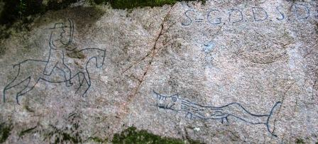

Lat: 58.68110 Long: 16.10570
Ett härligt område med mycket klättring, men också en vacker badsjö med dykklippor och stränder, fina campingmöjligheter och smidig anmarsch. Lämpar sig även utmärkt för den som reser med kompisar eller familj som inte klättrar, eftersom det finns så mycket annat att göra. Många av klipporna är barnvänliga.
Ett pågående naturreservatsprojekt kan få konsekvenser för klättringen. Visa hänsyn när ni är där!
Mellan parkeringen och lilla berget finns gott om tältplatser. Där finns också eldstad och soptunna. mer avskilda platser hittar du om du följer stigen längs sjön efter lilla berget. Tältning vid fotbollsplanen rekommenderas EJ om man inte är förtjust i knott..
Förare tillhandahållen av
.
A-lagsväggen, B-lagsväggen, Drakväggen, Volxväggen, Surfväggen, Ravinväggen och Östväggen ligger utspridda på "Fotbollsberget" eller Borgarberget, som ligger norr om fotbollsplanen.
Längs stigen utmed sjön hittar man först Lilla berget, flankerat av Röda Oktoberväggen till höger och divaväggen till vänster.
Följer man sedan stigen vidare längs sjön kommer man så småningom till Stora väggen. Ovanför den ligger svaplattan och bortom den dels några tvärväggar, dels sjöklippan.
Fotbollsberget eller Borgarberget som det egentligen heter ligger precis norr om den gamla fotbollsplanen. Här finns en hel del fina leder, och det är ofta "ledigt" även när lilla berget är täckt av topprep och körna ringlar långa vid stora berget och svaplattan.
Drakväggen ligger precis över vägen från fotbollsplanens nordvästra hörn. Lätt att känna igen på den inristade draken.
Här går tre mycket fina bultade svaleder. Från vänster till höger:
A-lagsväggen ligger till höger och ovanför drakväggen. Leder i grad 6 till 8+. Bultningen är inte överdrivet tät.
B-lagsväggen ligger till höger om A-lagsväggen och har, som namnet antyder, lite lättare leder än den förra.
Går du upp till höger om B-lagsväggen hittar du en låg överhängande klippvägg. Det är Volxväggen. Korta boulderartade leder.
Ta till vänster vid Volxväggen så kommer du till Surfväggen.
Ovanför Surfväggen ligger en trång ravin. Det är (surprise) Ravinväggen. Leder i grad 6 til 8.

"Lilla berget" är den första lodräta klippväggen om man följer stigen efter sjön. Mycket topprep fina dagar. Många vandrare som stannar och tittar.
Divaväggen är lilla bergets fortsättning till vänster.
Röda oktoberväggen är Lilla bergets fortsättning till höger.
Borrbultspartiet ligger bortom och ovanför Divaväggen.
En bit bortom lilla berget ligger "Bokskogsväggen" i nästan ständig skugga.
Till Stora Väggen kommer du genom att följa sjön från lilla berget. Anmarchen ca 15-20 minuter. Du märker när du är framme...
En imponerande vägg med härlig väggklättring. Det kan ta ett tag innan lederna torkar efter regn.
Till höger (och ovanför) stora väggen. Soligt och snabbtorkat. Du kommer hit genom att klättra insteget på
(4) eller genom att fira uppifrån. Det finns bra ankare för topprep.
Gammbultspartiet ligger till höger om stora väggen, och leder upp mot svaplattan.
Här ligger några leder i 4/5-registret. Graniten är inte snäll mot fingrarna.
Kategori:Norrköping
category:Barnvänligt
Kategori:sport
Kategori:trad
Kategori:Vertikalt
Kategori:Sva
Kategori:DWS
Kategori:Is
Kategori:Östergötland
Kategori:Barnvänligt
Copyright (C) Permission is granted to copy, distribute and/or modify this document under the terms of the GNU Free Documentation License, Version 1.3